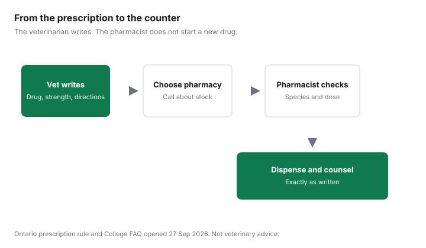

Pets · Canada
Can a Regular Pharmacy Fill Your Pet's Prescription in Canada?
A regular pharmacy can be a place to fill a drug a veterinarian has already prescribed. It is not a place to invent a drug, change a dose, or decide that a human tablet is “close enough.” This page is the walk from the written prescription to the counter, with the safety checks the Ontario College of Pharmacists prints and the 2026 news that community pharmacies in Ontario were dispensing for animals. Dollar comparisons live on the medication guide. How to get the prescription in Ontario is the rights guide. This is not veterinary advice, and it does not name a pharmacy to use.
Key takeaways
- The Ontario College of Pharmacists’ FAQ says pharmacy professionals may dispense or compound pursuant to a veterinarian’s prescription if they have the knowledge and skills. Initiating, adapting, renewing, and minor-ailment prescribing are described as human-patient services.
- In Ontario, Regulation 1093 section 26 is how you get the prescription in writing when you ask for it instead of clinic dispensing. The College of Veterinarians says a writing fee may be charged. No amount was printed.
- CP24’s report, published 5 Mar 2026, describes Ontario community pharmacies dispensing for animals and quotes a pharmacist and a veterinarian on safety and on clinic revenue. Treat the quotes as interviews.
- The College’s animal-pharmacy policy was still a public consultation on the page dated 28 Aug 2026, with comments requested by 26 Oct 2026 at 4:00 p.m. Eastern. That deadline is the page’s schedule, not a law this guide is announcing.
- No shelf price was opened. Compare totals on the medication guide, including any fee to write the prescription. The Competition Bureau’s 30 Oct 2024 page says fill options were often limited to the veterinary office. That is the background line, not a savings percent.
Which pet medications a community pharmacy can fill, and which it can't
The College of Pharmacists’ FAQ, opened 27 Sep 2026, says pharmacy professionals may dispense or compound drugs pursuant to a prescription issued by a veterinarian for an animal, provided they have the knowledge and skills to do so safely and in accordance with the standards of practice.
It quotes the Drug and Pharmacies Regulation Act’s definition of a prescription as a direction from a prescriber for the dispensing of any drug or mixture of drugs for a designated person or animal. The patient is the animal, not the owner. The same FAQ says other services, including initiating, adapting, and renewing prescriptions, or administering substances, sit under the Pharmacy Act, whose definition of prescription does not include the word animal. Minor-ailment prescribing is for human patients. A pharmacist who lacks the competence is expected to say so.
That is a rule about acts, not a list of brand names. A pharmacy can fill what was written if it can obtain the product and a pharmacist will take responsibility for dispensing it. It cannot fill a drug the veterinarian did not prescribe, and it should not swap in a human version because the tablet is cheaper. The College of Veterinarians’ prescribing guide says not every pharmacy stocks every veterinary drug. Phone before you travel. Controlled drugs and compounds follow the prescription and the pharmacy’s own authority. This page does not add a list of products that are “always available.” CP24’s 5 Mar 2026 story says some veterinary suppliers had begun letting community pharmacies open accounts for medications labelled for veterinary use. That is news about supply, not a directory.
One line from the Competition Bureau’s 30 Oct 2024 page belongs here and then stops: the Bureau said pet owners’ choice of where to fill prescriptions was often limited to veterinary offices. The vet-bill guide is the broader cost conversation. Health Canada’s veterinary-drugs landing page returned an error on 27 Sep 2026, so no approval statistic is copied from it. The Bureau page says the Veterinary Drugs Directorate approves veterinary drugs for safety, effectiveness, and quality. Confirm a product’s status with the prescriber, not with a checkout button.
At the counter: what to bring and what the pharmacist checks
Bring the written prescription, the animal’s name and species, your identification, and any allergies or other drugs the veterinarian already knows about. In Ontario the prescription should carry the fields in Regulation 1093 section 26: drug name, strength, quantity, the veterinarian’s name, address, and licence number, the animal, your name, the directions, the full date, and refills if any.
If the clinic sent it orally, the regulation’s conditions for an oral prescription still apply. Ask the pharmacist to read the drug, the strength, and the directions back to you. Ask whether the product in the bottle is the one named, or a substitution the veterinarian has already approved. A substitution the pharmacist invents is the adapting the College’s FAQ puts outside animal practice.
CP24 quotes Marina Barcham, a London pharmacist, saying her pharmacy stores animal drugs to the manufacturer’s guidelines, enters them in dispensing software, and labels and dispenses them exactly as written, with no changes unless the prescriber clarifies. That is one pharmacist’s description of her practice in a news story, not a standard you can enforce by quoting the story. It is a useful picture of what “exactly as written” sounds like at a counter. Ask your pharmacist the same question in your own words. Costco’s pet-insurance page tells members to call the Costco Pharmacy to verify availability and to have the veterinarian fax the prescription. Availability is a phone call. “Exceptional savings” on that page is a slogan. No percent was printed.
Safety: dosing differences, flavours and ingredients toxic to pets (e.g. xylitol)
The College’s FAQ says differences in anatomy and physiology can change how a drug behaves, and that species-specific toxicities exist. A dose that is ordinary for an adult human can be the wrong dose for a dog or a cat.
The veterinarian’s directions are the dose. Do not split a human tablet to “make it small enough” unless the prescription says to. Do not use a leftover human prescription because the symptoms look familiar. CP24 quotes veterinarian Trina Hancock on the same point: a pharmacist trained in human medicine may not know species differences, and animals metabolize medications differently. Both people quoted in that story say the animal’s safety comes first. This page agrees with the caution and does not add a clinical rule of its own.
Flavours are part of the same check. A liquid or a chew made for people can contain a sweetener that is a problem for a dog. Xylitol is the example to name at the counter, because it shows up in human gums, melts, and some flavoured products. The pages opened on 27 Sep 2026 do not print a toxic dose, a number of sticks of gum, or a species table. Ask the pharmacist to read the ingredient list against the prescription, and ask the veterinarian if a flavoured human product was not what they wrote. If the animal is already ill after an exposure, that is an emergency clinic, not this article. The emergency-bill guide is the intake conversation. It is not first aid.
Compounding pharmacies for pets
Compounding means preparing a product pursuant to the prescription, for example a strength or a form the veterinarian ordered that is not on the shelf as a finished package. The College’s FAQ allows compounding for an animal when the pharmacist has the skills.
The public consultation dated 28 Aug 2026 lists compounding veterinary prescriptions among the activities the draft policy is meant to describe, alongside dispensing and selling. The consultation page says the Veterinary Professionals Act, 2024, is expected to come into force in the near future, and that without a regulatory exemption only veterinary professionals would be legally permitted to perform those activities. Comments on that draft were requested by 26 Oct 2026 at 4:00 p.m. Eastern. The policy was a draft on the day this page was written. Do not treat the draft as the rule in force at the counter. The FAQ that is already published is the rule this walkthrough uses: dispense or compound what was prescribed, and do not adapt it.
A compounding pharmacy is still a pharmacy. It should ask for the veterinarian’s prescription, say who regulates its pharmacists, and send you back to the veterinarian if the formula has to change. A site that offers to “make a cheaper version” without that loop is outside the model. No compounding fee was opened, so none is printed.
Price-checking: vet clinic vs pharmacy vs online
Write three totals before you celebrate a lower sticker. The clinic’s price to dispense, which may already be on the itemized account.
The clinic’s fee to write the prescription, if there is one, plus the pharmacy’s price for the same drug, strength, quantity, and refills. An online seller that requires the same prescription, names the pharmacy college its pharmacists belong to, and will not rewrite the drug. If any total is missing a dispensing fee or a shipping fee, it is not a total. The medication guide is where that worksheet already lives. This page does not repeat a winning banner, because no prices were loaded on 27 Sep 2026. CP24’s pharmacist said she believes there is no cap on animal drug pricing of the kind human drugs have. That is her view in an interview. It is a reason to compare, not a measured markup.
Step-by-step walkthrough
Do the steps in order. Skipping the prescription, or letting someone change it to win a price, fails the College’s FAQ even if the bottle is cheaper. If the pharmacy cannot get the product, go back to the veterinarian rather than accepting a different drug at the counter.
| Step | What you do | What to confirm | Safety flag |
|---|---|---|---|
| 1. Prescription | Ask the veterinarian for a written prescription if you will not have the clinic dispense. | Section 26 fields are on the paper. Ask the writing fee. | No prescription, no fill. |
| 2. Choose a pharmacy | Phone and ask whether they dispense veterinary prescriptions and stock this drug. | Costco’s page says to call its pharmacy and have the vet fax. Other banners: ask. Shoppers was not opened. | A checkout button with no prescription is the wrong door. |
| 3. At the counter | Hand over the prescription. State the species. | Drug, strength, quantity, and directions read back. Patient is the animal. | Do not accept an adaptation or a human minor-ailment substitute. |
| 4. Ingredients | Ask about flavourings if the product is not the one named. | Whether xylitol or another sweetener is in a flavoured product the vet did not write. | No toxic dose is printed here. Ask the veterinarian. |
| 5. Compounding | Only if the prescription calls for a compound. | The formula matches the prescription. Changes go back to the vet. | A “cheaper version” without the vet is not compounding under the FAQ. |
| 6. Price | Compare clinic, pharmacy, and a licensed online fill on the same drug. | Writing fee, dispensing fee, and shipping are inside the total. | The medication guide is the worksheet. This page has no winner. |

Sources & date stamps
- Ontario College of Pharmacists, FAQ on professional services for veterinary patients, opened 27 Sep 2026. Dispense or compound pursuant to a veterinary prescription. Pharmacy Act services such as adapting, renewing, and minor ailments described as human. Species differences and species-specific toxicities stated without a dose table. Copyright line 2026.
- Ontario College of Pharmacists, public consultation on the draft Providing Pharmacy Services for Animals policy, page dated 28 Aug 2026, opened 27 Sep 2026. Veterinary Professionals Act, 2024, expected to come into force in the near future. Comments requested by 26 Oct 2026 at 4:00 p.m. Eastern. Draft, not a final rule.
- R.R.O. 1990, Regulation 1093, section 26, e-Laws consolidation opened 27 Sep 2026. Written prescription on request. College of Veterinarians prescribing guide: a writing fee may be charged. No amount.
- CP24, “Ontario pharmacies filling pet prescriptions, sparks debate among veterinarians,” published 5 Mar 2026 and updated the same day, opened 27 Sep 2026. Interviews with Marina Barcham and Trina Hancock as described. Not a statute.
- Competition Bureau Canada, 30 Oct 2024, one background line: fill options often limited to veterinary offices. The same page says the Veterinary Drugs Directorate approves veterinary drugs. Health Canada’s veterinary-drugs URL returned an error on 27 Sep 2026. No shelf prices.
- Costco Canada pet-insurance page, opened 27 Sep 2026. Call the Costco Pharmacy to verify availability and have the veterinarian fax the prescription. No percent off the drug was printed.
Frequently asked questions
Can Shoppers or Costco fill my dog's prescription?
A community pharmacy can dispense a drug for an animal when a veterinarian has prescribed it and the pharmacy has the product and the competence. Costco’s pet-insurance page, opened 27 Sep 2026, tells members to call the Costco Pharmacy to verify that the medication is available and to ask the veterinarian to fax the prescription. No price was printed there. A Shoppers Drug Mart policy page was not opened, so this guide does not say that banner does or does not stock a given drug. Phone the pharmacy and ask about that prescription.
Do I need a written prescription from my vet?
In Ontario, if the veterinarian has decided a drug should be prescribed and you want it dispensed elsewhere, Regulation 1093 section 26 says they shall give you a written prescription unless you specifically want an oral prescription that meets the regulation. The Ontario College of Pharmacists’ FAQ says pharmacy professionals may dispense or compound pursuant to a prescription issued by a veterinarian. Bring the paper, or confirm the oral route the regulation allows. Do not ask the pharmacist to start a drug the veterinarian did not prescribe.
Is human medication safe for pets?
The College of Pharmacists’ FAQ says the use of a drug in humans cannot be equated to the use of the same drug in animals, because anatomy and physiology differ and species-specific toxicities exist. That is a reason to follow the veterinary prescription and not to substitute a human product because it looks similar. This page does not state a toxic dose for any sweetener or flavouring, including xylitol. Ask the veterinarian and the pharmacist. This is not veterinary advice.
What is a compounding pharmacy?
Compounding, in the College of Pharmacists’ FAQ, is something a pharmacy professional may do pursuant to a veterinarian’s prescription, if they have the knowledge and skills to do it safely. It is not permission to change the drug, the dose, or the patient. The same FAQ says initiating, adapting, or renewing a prescription, and minor-ailment prescribing, are for human patients. If a flavour or a form has to change, the veterinarian is the person who changes the prescription.
Is it cheaper to fill pet prescriptions at a pharmacy?
Sometimes, and this page does not print a saving because no shelf prices were opened. Compare the clinic’s dispensed total, the clinic’s fee for writing the prescription plus the pharmacy’s total, and any online pharmacy that requires the same unchanged prescription. The medication guide is that comparison. A CP24 report of 5 Mar 2026 quotes a London pharmacist on the absence of a human-style cap on animal drug prices. Treat that as an interview, not a provincial tariff.
Researched and drafted with AI assistance and fact-checked against official Canadian sources. How we create content.